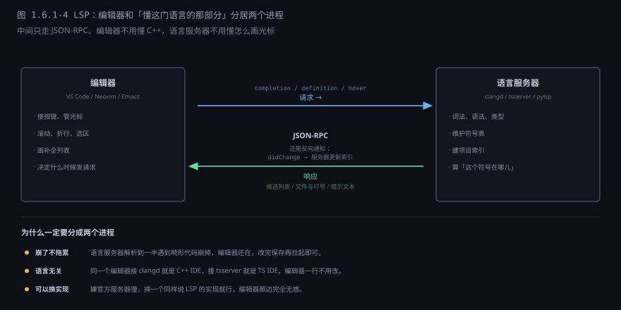
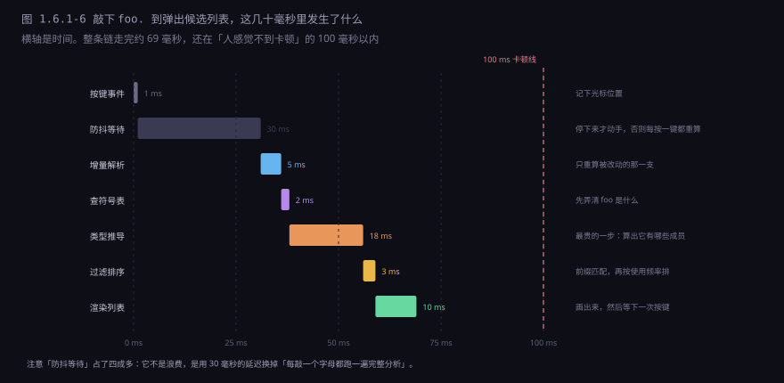

约 0.7 万字 · 6 张图 · 读完你能说清编辑器眼里代码是什么、 补全凭什么猜、跳转为什么有时跳到错的地方， 以及为什么同一个编辑器换个插件就能变成另一种语言的 IDE
foo.，半秒内弹出一个列表。
光标下面那 20 个候选，全是你此刻能用的成员，而且常用的排在前面。
第一个反直觉的事实：编辑器里没有「代码」，只有字符。
打开一个 .py 文件，磁盘上是一串字节，编辑器读进来是一串字符，
再加上一个光标位置。仅此而已。
你在屏幕上看到的缩进、括号配对、变量名变色，都是画上去的。 编辑器内部同时维护着三样东西，从下往上：
三个层次各有各的用途，也各有各的代价：
| 层次 | 怎么来的 | 用来干什么 | 代价 |
|---|---|---|---|
| 字符 | 文件内容本身 | 显示、光标、选区、复制粘贴 | 几乎为零 |
| 词法单元 | 按规则切词 | 语法高亮的底色、括号匹配 | 一行几微秒 |
| 语法树 | 按语法规则组装 | 补全、跳转、重命名、格式化 | 一个文件几十毫秒 |
在字符这一层，还有一个容易被忽略的设计问题：文本用什么结构存。 最直觉的做法是一个字符数组，但那意味着在文件开头插一个字符，要把后面几百万个字符全部往后挪一位。 所以真实的编辑器都不用数组，而是用「片段表」（piece table） 或者「绳」（rope）： 把文本切成若干块，插入只是在块的列表里加一条记录，删除只是标记某一块不显示。 改一个字符的开销从 O(n) 降到 O(1)，这是编辑器能流畅编辑大文件的前提。
语法高亮看着像「给不同东西涂不同颜色」，其实是「判断每一段字符属于什么语法成分」。 判断得准不准，取决于它有没有真的理解这段代码。
// 就认定注释开始，它不知道这两个斜杠此刻正在一个字符串里。这类错误在模板字符串、原始字符串、多行注释里同样常见。绝大多数编辑器（包括 VS Code）默认用的是逐行正则这条路， 也就是 TextMate 语法：一套嵌套的匹配规则，每一行独立套一遍。 它有三个明显的好处：快（一行几微秒）、简单（写个 JSON 就是一套语法）、 能容忍任何文件（哪怕是语法错误的、二进制的、超大的）。
代价就是图里那种错误。要修正它，只有一条路：真的解析。 可解析一个文件要几十毫秒，打开大文件时不能这么干。 于是现代编辑器普遍用分层的办法：
第一层：TextMate 正则给全文铺底色 —— 保证任何文件都能瞬间打开
第二层：tree-sitter 解析可见区域 —— 只算屏幕上那几十行
第三层：语言服务器的语义着色 —— 异步到达，覆盖前两层的结果所以你会看到一个很有意思的现象：刚打开文件时颜色是「大概对」的， 滚动几下之后变准了，再过一两秒又变了一次。 那不是错觉，是三层结果依次到达。第三层最准（它知道这个符号到底是变量还是类型）， 但也最慢（要跨文件查符号表）。
补全列表里的候选，来源不止一个。按「看到的信息多少」排，可以分成四层：
四层各自能回答的问题不一样：
| 层 | 它知道什么 | 典型表现 |
|---|---|---|
| 词法 | 这个词在文件里出现过 | 输入 str 就冒出 string、strlen、my_str，不管它们此刻可不可见 |
| 语法 | 这个词在当前位置的作用域里 | 函数内的局部变量会出现，别的函数里的不会 |
| 语义 | 这个对象的类型上有哪些成员 | 敲 foo. 之后，只有 foo 类型的方法和字段 |
| 跨文件 | 别的文件里定义、并且被导入了的符号 | 敲 Math. 能列出标准库的成员 |
候选出来之后还要排序，这一步对体验的影响比想象中大。
常见的权重是：前缀完全匹配 > 驼峰缩写匹配（gfi 匹配 getFileInfo）>
最近用过 > 在同类上下文里用得多 > 字母序。
排序错了，用户就会觉得「这编辑器不懂我」，哪怕候选其实全对。
同一个编辑器，写 TypeScript 时补全准得像读心，写 JavaScript 时经常给一堆没用的东西。 差别不在编辑器，在语言能不能被静态分析。
在 TypeScript 里写下 const x: User = ...，编辑器立刻知道 x 是 User，
User 有哪些字段在类型定义里写着。敲 x. 就是把字段列表抄一遍，准确率接近 100%。
换成 JavaScript：
const x = getUser(); // getUser 返回什么？类型信息里没写
x. // 这里能点什么，编辑器真的不知道
它只能做两件事：一是去读 getUser 的函数体，看看它 return 了什么
（如果函数在同一个项目里、并且没有一堆分支返回不同类型）；二是把当前作用域里所有名字都列出来让你自己挑。
第二种就是「傻」的来源——不是它不想聪明，是它手上真的没有信息。
这也是为什么 Python 的类型注解（def f(x: int) -> str:）这几年越来越流行：
注解对运行时的程序毫无影响，但对编辑器来说是雪中送炭。
加了注解，补全立刻从「猜」变成「查」。
2016 年之前，每个编辑器要支持一门语言，就得为它写一个插件。 N 个编辑器 × M 门语言 = N×M 份工作，而且每份都从头实现一遍词法、语法、类型推导。 这件事浪费了全世界程序员大量的时间。
语言服务器协议（LSP）把这件事拆成了两半： 编辑器只管「按键、光标、渲染」，语言服务器只管「懂这门语言」， 中间用一套标准的 JSON-RPC 消息通信。

协议本身很朴素，就是几条消息：
编辑器 → 服务器 initialize 我打开了这个项目，这些是配置
编辑器 → 服务器 textDocument/didOpen 这个文件打开了，内容给你
编辑器 → 服务器 textDocument/didChange 我改了这几行（增量）
编辑器 → 服务器 textDocument/completion 光标在这儿，给候选
服务器 → 编辑器 （响应） 这是候选列表，带类型和文档
编辑器 → 服务器 textDocument/definition 这个符号定义在哪
服务器 → 编辑器 （响应） file:///.../user.ts, 第 42 行分成两个进程带来三个好处，每一个都很实际：
一是崩了不拖累。 语言服务器要解析的是你正在写的、随时处于半截状态的代码，崩溃是常态。 它在自己的进程里崩，编辑器还在，你保存一下，服务器重新拉起来。 如果全在一个进程里，那就是整个编辑器一起没。
二是语言无关。 同一个 VS Code，装 clangd 就是 C++ IDE，装 pyright 就是 Python IDE， 编辑器一行代码不用改。这就是为什么现在「编辑器 + LSP」的组合能通吃所有语言。
三是可以换实现。 嫌官方服务器慢，换一个同样说 LSP 的实现就行，编辑器那边完全无感。 协议成了生态的接口，实现之间可以竞争。
「跳转到定义」听起来比补全简单，其实它更难，因为要先回答「这个同名符号到底是哪一个」。
最原始的做法是全文搜索同名文本，这也是 ctags 时代的做法： 扫一遍所有文件，把所有函数名、变量名和它们的位置记下来，跳转就是查表。 它快、简单、任何语言都能用，但它不知道作用域。
void f() { int i = 0; ... } // 这个 i
void g() { int i = 0; ... } // 和这个 i，是两个毫不相干的变量
// 在 g 里对 i 点「跳转到定义」，全文搜索会给你两个结果
正经的做法要用到符号表 + 作用域链：
解析的时候记下每个符号属于哪个作用域，查找时从内层往外层逐级找，
找到第一个就停。这样两个 i 就不会混。
但即便这样，还是有一批情况跳不准，而且每一门语言都有自己的坑：
| 情况 | 为什么难 | 结果 |
|---|---|---|
| 函数重载 | 同名函数有五个版本，要按参数类型选 | 可能跳到「最像」的那个，而不是真正调用的那个 |
| 宏 / 模板 | 展开之后才是真正的代码，展开前不存在 | C++ 里经常跳到宏定义，而不是宏展开后的符号 |
| 动态派发 | obj.method() 运行时才知道 obj 是谁 | 只能列出所有可能的实现让你选 |
| 反射 / 字符串调用 | 名字是拼出来的，静态看不见 | 完全跳不了 |
这也解释了一个常见困惑：为什么同一个项目里，有的地方跳转很准，有的地方一跳就跑到奇怪的地方。 不是编辑器坏了，是那段代码超出了静态分析能覆盖的范围。 C++ 项目里这种情况最多，因为宏和模板能把「代码长什么样」推迟到编译期才确定。
比跳转更能暴露问题的是重命名。跳转错了你还能看出来，重命名错了是悄悄改坏。 它要把「所有引用这个符号的地方」全换掉，而这里有两个坑：
一是阴影。内层作用域可以定义一个和外层同名的变量， 这时候改外层不能动内层：
int count = 0; // 改名要动这个
void f() {
int count = 10; // 这个同名，但不是同一个符号，不能动
count++; // 这个 ++ 属于内层的 count
}
二是同名但无关。变量叫 name，某个结构体里也有个字段叫 name，
还有一处日志字符串里写着 "name"。前两个是不同符号（一个不能动），后一个根本不是符号（是文本）。
靠全文替换，三处全改；靠符号表，只会改该改的那一处。
所以「重命名」这个功能，是检验一个编辑器的语言分析到底做得多深的试金石。 它比补全严格得多：补全错了你换个候选就行，重命名错了要回滚整个提交。
打字是连续的。你敲一个字母，语法树就过时了；再敲一个，又过时。 如果每次按键都全文重解析，一个两千行的文件要 200 毫秒——每敲一个字母卡 0.2 秒，没法用。
增量解析的关键是给树的每个节点记一个区间（从第几个字符到第几个字符）。 改动进来时，从根往下找，凡是区间覆盖了改动点的节点就标记为「脏」， 其余节点原样保留。然后只对脏的那条路径重新解析。
这条路径通常是「改动点到根」，长度等于树的深度， 在正常代码里也就十几层。所以重解析的代价与文件大小无关，只与改动处嵌套多深有关。 改一个顶层语句，可能只碰 3 个节点；改一个深层表达式，可能碰 20 个。
除了增量解析，还有一道「防抖」：你连续打字的时候，编辑器不会每个键都算一次， 而是等键盘安静下来 30 到 50 毫秒再动手。 这不是偷懒，是把「打字速度」和「分析速度」解耦—— 人打字最快也就每秒十来个键，30 毫秒的等待完全感觉不到，但省掉了九成的重复计算。
这是编辑器和编译器最根本的区别，值得单独说。
编译器遇到语法错误会怎么办？报一行 expected ';' before '}'，然后退出。
它没有义务理解一段不合法的人代码。
编辑器不行。你正在打字，代码永远处于「半截」状态： 括号没闭合、引号没配对、函数写了一半。如果解析器一遇到错误就放弃， 那你的编辑体验就是：只要有一个语法错误，整个文件所有的高亮、补全、跳转全部消失。
所以编辑器用的解析器必须能错误恢复：遇到不认识的 token 就跳过， 遇到缺失的括号就虚拟补一个，然后继续往下解析。 目标是「尽量多理解一点，而不是一遇到问题就全盘放弃」。
你正在打的代码：
function f() {
const x = foo( ← 括号还没闭合，光标在这儿
编译器的反应：语法错误，终止。
编辑器的反应：假装这里有个 )，继续解析下面的内容，
于是上面的 function 和 const 依然能被识别，
补全依然知道 x 是什么。这解释了一个很多人遇到过的现象：IDE 里代码标着红波浪线，但补全照样能用。 红色是「这里有错」，补全能用是「除了这里，其他地方我都读懂了」。 两件事互不干扰，因为它们背后是同一棵「带错误节点」的语法树。
回到开头那个动作。从你敲下 . 到列表出现，中间要走完整条链：

. 之后的 69 毫秒。防抖那 30 毫秒占了四成多，但它是划算的：用确定的 30 毫秒延迟，换掉「每敲一个字母都跑一遍完整分析」的不确定开销。最长的一段是类型推导 18 毫秒，这也是大项目里最容易超标的一步——项目一大，类型关系变成一张大网，推一个变量可能要翻几十个文件。100 毫秒这个数不是随便定的，它是人机交互研究里那个著名的阈值： 超过 100 毫秒，人就会觉得「卡了一下」；超过 1 秒，注意力就跑了。 所以几乎所有编辑器的性能预算都按这个数来分。
超标了怎么办？三条路，按性价比排：
一是缓存。 文件解析结果缓存（改之前不用重算）、类型信息缓存（同一个类型不用推两次）、 符号索引缓存（跨文件查找不用每次扫全项目）。缓存是性价比最高的一招， 代价是要处理「什么时候失效」——这是所有缓存bug的来源。
二是异步 + 渐进。 先弹一个粗略的列表（词法层，1 毫秒就能出）， 等语义结果到了再替换成精确的。你看到的「列表先闪一下再变」，就是这个策略。
三是降级。 文件太大（比如超过 10 MB）就关掉语法树相关的功能，只留高亮和基本编辑。 这不是偷懒，是明确告诉用户「这个文件我不做深度分析了」，好过让整个编辑器卡死。
IDE 这个词被用得越来越泛，但它原本指的东西很具体： 把写代码需要的几件事集成到一个界面里—— 编辑、构建、调试、版本控制、还有「懂这门语言」的各种分析。
按「语言能力放在哪儿」，现在的 IDE 大致分两派：
| 形态 | 语言能力在哪 | 启动 | 代表 |
|---|---|---|---|
| 重量级 IDE | 编辑器自己进程里，启动时就建索引 | 慢，几十秒 | Visual Studio、CLion、IntelliJ |
| 编辑器 + LSP | 外部语言服务器，按需加载 | 快，一秒内 | VS Code、Neovim、Emacs |
两种形态没有绝对优劣，取舍很清楚： 重量级 IDE 用启动时间换「打开就能用」， 索引在启动时建好，之后的补全和跳转都是内存查表，延迟极低； 轻量编辑器用「首次使用时等一下」换启动速度， 你打开一个 C++ 项目，clangd 会在后台花一两分钟建索引，这期间补全是不准的。
近几年的趋势是往后者走，原因不是技术更先进，是项目形态变了： 微服务、多语言、容器化之后，一个开发者一天里要在三四种语言、十几个仓库之间跳。 为每种语言装一个重量级 IDE 已经不现实了，一个编辑器配一堆语言服务器更省事。
这里有个很多人踩过的坑：语言服务器需要一份「这个项目怎么编译」的配置。
C++ 的 clangd 要 compile_commands.json，
TypeScript 要 tsconfig.json，Python 要知道用哪个解释器、哪些目录在搜索路径上。
没有这份配置会发生什么？语言服务器只能猜。它猜不到 #include "foo.h"
里的 foo.h 到底在哪个目录，于是那个头文件里定义的类全部变成「未知类型」，
于是补全给不出成员，跳转跳不过去，整个项目的体验断崖式下跌。
同一份代码、同一个编辑器，配上配置和没配配置，体验能差到像两个产品。 这也是为什么「我的 IDE 不好用」的抱怨里，有相当一部分其实是配置问题—— 工具没坏，是它一直没拿到干活需要的信息。
编辑器很聪明，但它的聪明有明确的边界。四件事它做不到：
它不知道你的意图。
补全能告诉你 deleteUser 这个函数存在、接受一个 id、返回 boolean，
但它不知道你此刻是想删用户还是想查用户。它给的是「语法上合法的候选」，
不是「你心里想写的那个」。
首次索引要等。 大型 C++ 项目（比如 Chromium）用 clangd 建一次索引要十几分钟到几十分钟。 这期间跳转和补全都是残缺的。这不是实现不好，是「把几十万个文件解析一遍」这件事本身就这么贵。
动态语言天然不准。 前面说过，Python、Ruby、JavaScript 的补全质量受限于「类型信息在运行时才确定」。 加注解能改善，但注解覆盖率不高的项目，补全就只能靠猜。
宏和代码生成会让静态分析失效。 代码不是手写的，是生成的（protobuf、ORM、模板引擎）， 静态分析看不到生成后的样子。所以很多项目里，生成代码的补全和跳转是坏的。
这一节从头到尾讲的是同一件事：编辑器把「文本」变成了「结构」。 字符变词法单元，词法单元变语法树，语法树加符号表变成「能回答问题」的东西。 补全、跳转、重命名、找引用，全都是在这套结构上做的查询。
而所有的工程复杂度，都来自一个矛盾： 结构要准确，就得慢慢解析；而人的手指不会等。 增量解析、防抖、分层高亮、异步补全、缓存、降级—— 这些手段没有一个是「让解析变快」，全都是「让用户感觉不到解析的存在」。
但它终究只知道语法。它能告诉你「这个函数接受两个参数」， 不能告诉你「你传的这两个参数是不是反了」； 能告诉你「这行代码永远不会被执行」，不能告诉你「这是不是你想要的结果」。 要回答后一类问题，得让程序真的跑起来，然后在中途停下来看。 那就是下一节的事：调试器。
char *s = "// 不是注释";，为什么逐行正则会把后面涂错？obj.，为什么写 TypeScript 时补全比 JavaScript 准？i，全文搜索为什么会跳错？正确的做法靠什么？// 就认定注释开始，不知道这两个斜杠此刻在一个未闭合的字符串里。它缺的不是规则，是「上文」。x 是 User、User 有哪些字段；JavaScript 没有类型信息，只能靠读函数体猜，或者把作用域里所有名字都列出来。i 在它眼里是同一个名字。正确做法是解析时建符号表，记录每个符号属于哪个作用域，查找时从内层往外层逐级找，找到第一个就停。